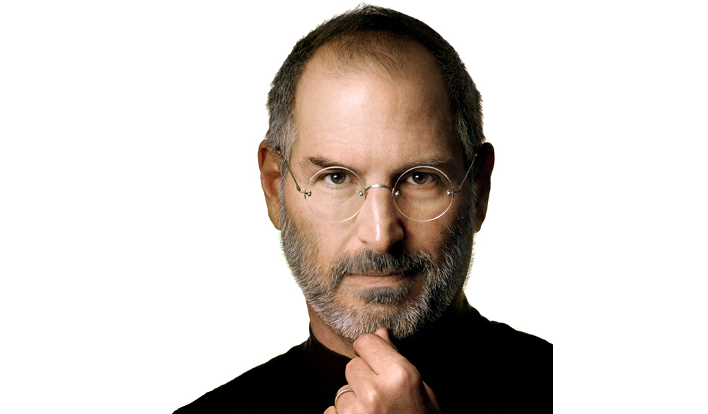

Steve Jobs Portrait
Let's take a look at Steve's life, shall we?
-
1955
- Steve Jobs is born in San Francisco,
and quickly adopted.
-
1960
- The Jobs family moves to
Mountain View, otherwise known as Silicon Valley
-
1968
- 13 year old Jobs gets a summer
job at the HP factory
-
1969
- Steve Jobs meets Steve Wozniak
-
1972
- Jobs and Wozniak build and illegally
sell 'blue boxes' that
allow free phone calls to be made
-
1973
- Steve spends the fall semester
at Reed College, Oregon, then drops out.
-
1974
- Steve gets his first job at Atari
-
1976
- Wozniak and Jobs show the early
Apple I board at the Homebrew Computer Club
-
1976
- Apple Computer Inc is incorporated
by Steve Jobs, Steve Wozniak, and Ron Wayne
-
1977
- Apple makes a huge sensation
at the West Coast Computer Faire with a prototype
Apple II
-
1978
- The Apple II becomes
the first mass-market personal computer.
-
1978 - Steve's ex-girlfriend
Chris-Ann Brennan gives birth to their daughter Lisa.
Steve refuses to acknowledge he is the father.
-
1980 - Apple goes public
-
1982 - Steve Jobs ends up on
the Time Magazine cover
-
1983 - Launch of the Lisa Computer
-
1983 - PepsiCo CEO John Sculley
becomes Apple's CEO
-
1984 - Macintosh is launched
-
1985 - Apple's board sides
with John Sculley and strips Steve of all executive duties
-
1985 - Steve resigns from Apple
and starts NeXT
-
1986 - Jobs incorporates Pixar
-
1988 - NeXT and IBM form a
partnership
-
1989 - Steve Jobs is named
'Entreprenuer of the decade' by Inc. Magazine
-
1991 - Steve marries Laurene Powell
-
1991 - Laurene gives birth to Steve's second
child and only son, Reed Paul Jobs
-
1995 - Laurene gives birth to Erin Siena Jobs,
her second child with Steve
-
1995 - Pixar releases Toy Story
and Pixar goes public
-
1996 - Steve negotiates a deal between
Pixar and Disney. The deal includes landmark rights
for a studio, such as equal billing
-
1996 - Apple buys NeXT for $400 million
-
1997 - Steve Jobs is named
interim CEO and installs his NeXT executive team at
the top of Apple
-
1997 - Apple starts its Think Different campaign
to restore its damaged brand image.
-
1998 - Eve Jobs, Laurene and
Steve's youngest daughter, is born
-
1998 - Steve Jobs introduces Apple's iMac
-
2000 - Steve Jobs becomes Apple CEO, dropping the "interim" in his title
-
2001 - Apple opens its first Retail
Stores in Tysons Corner, Virginia and Glendale, California
-
2001 - Steve Jobs unveils iPod
-
2003 - Apple opens the revolutionary online
iTunes Music Store in the US
-
2003 - Steve Jobs is diagnosed
with pancreatic cancer
-
2004 - Steve unveils the iPod mini
-
2004 - Steve has his pancreatic tumor removed
by a surgeon
-
2005 - Steve unveils Apple's iWork and the Mac Mini
-
2006 - Steve unveils the first two Intel Macs at Macworld,
the iMac and the new MacBook Pro
-
2006 - Disney buys Pixar
-
2007 - Steve introduces the iPhone
-
2008 - Steve introduces MacBook Air
-
2008 - Apple announces it will open the iPhone platform to outside developers
-
2010 - Steve unveils the iPad
-
2011 - Steve announces his medical leave of absence, without an end date
-
2011 - Steve unveils the iCloud at his last keynote speech
-
2011 - Steve Jobs resigns as CEO of Apple
-
2011 - Steve Jobs dies at home, surrounded by his family